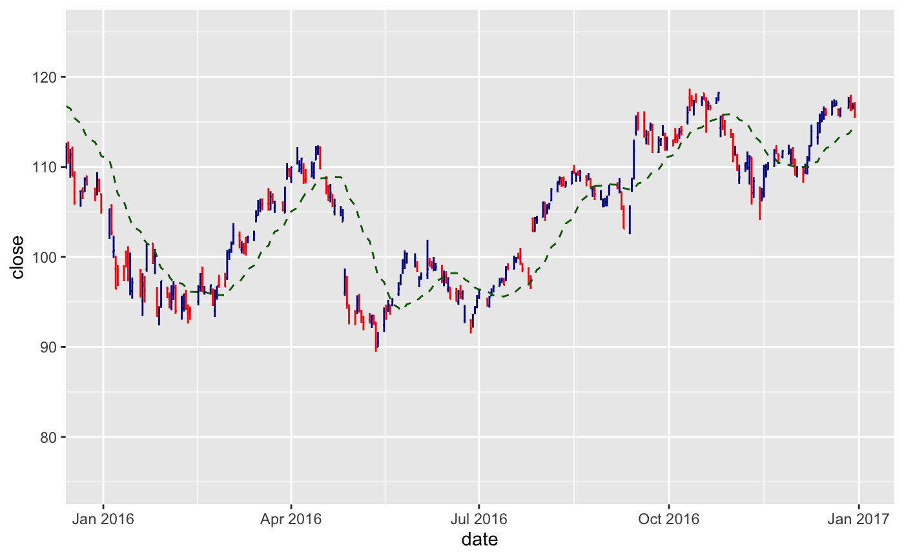

Financial charts provide visual cues to open, high, low, and close prices.
Use coord_x_date() to zoom into specific plot regions.
The following financial chart geoms are available:
geom_barchart(mapping = NULL, data = NULL, stat = "identity", position = "identity", na.rm = TRUE, show.legend = NA, inherit.aes = TRUE, colour_up = "darkblue", colour_down = "red", fill_up = "darkblue", fill_down = "red", ...) geom_candlestick(mapping = NULL, data = NULL, stat = "identity", position = "identity", na.rm = TRUE, show.legend = NA, inherit.aes = TRUE, colour_up = "darkblue", colour_down = "red", fill_up = "darkblue", fill_down = "red", ...)
| mapping | Set of aesthetic mappings created by |
|---|---|
| data | The data to be displayed in this layer. There are three options: If A A |
| stat | The statistical transformation to use on the data for this layer, as a string. |
| position | Position adjustment, either as a string, or the result of a call to a position adjustment function. |
| na.rm | If |
| show.legend | logical. Should this layer be included in the legends?
|
| inherit.aes | If |
| colour_up, colour_down | Select colors to be applied based on price movement
from open to close. If close >= open, |
| fill_up, fill_down | Select fills to be applied based on price movement
from open to close. If close >= open, |
| ... | Other arguments passed on to |
The following aesthetics are understood (required are in bold):
x, Typically a date
open, Required to be the open price
high, Required to be the high price
low, Required to be the low price
close, Required to be the close price
alpha
group
linetype
size
See individual modeling functions for underlying parameters:
geom_ma() for adding moving averages to ggplots
geom_bbands() for adding Bollinger Bands to ggplots
coord_x_date() for zooming into specific regions of a plot
# Load libraries library(tidyquant) library(dplyr) library(ggplot2) AAPL <- tq_get("AAPL") # Bar Chart AAPL %>% ggplot(aes(x = date, y = close)) + geom_barchart(aes(open = open, high = high, low = low, close = close)) + geom_ma(color = "darkgreen") + coord_x_date(xlim = c(today() - weeks(6), today()), ylim = c(100, 130))